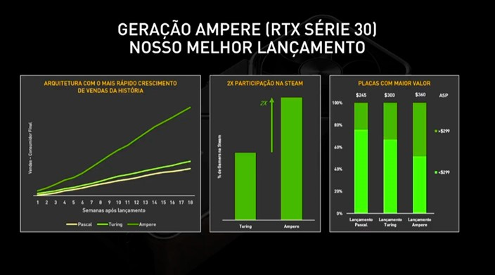
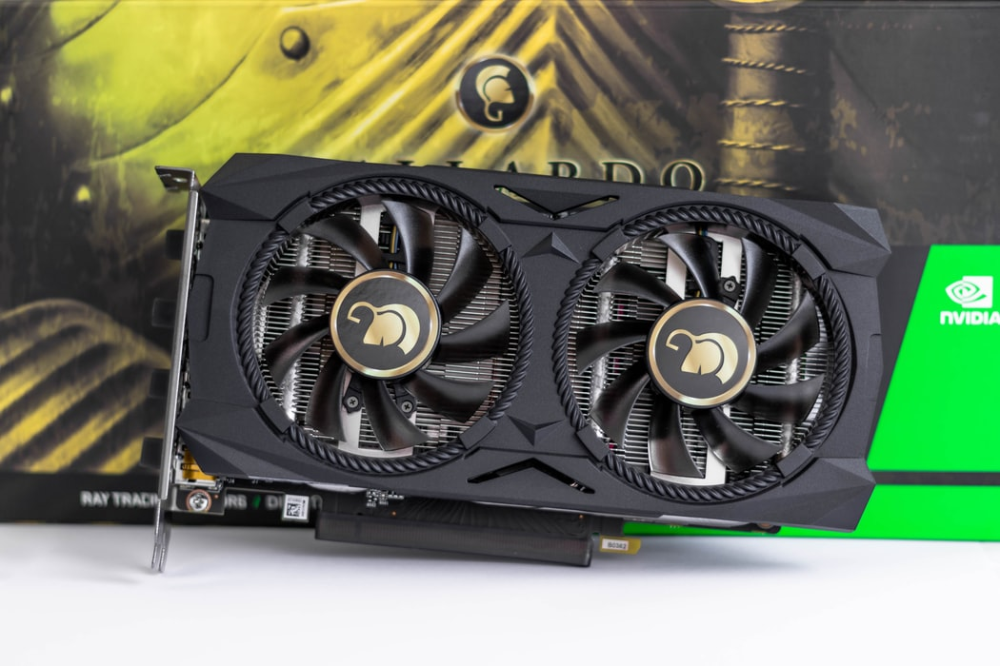
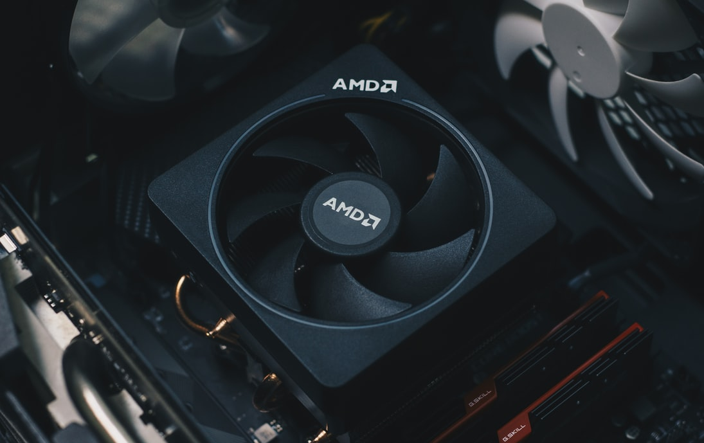
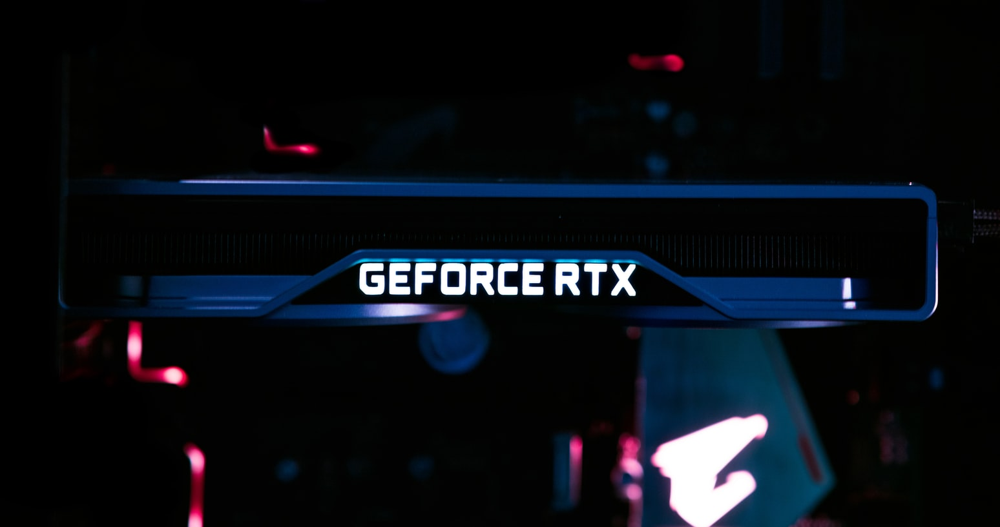
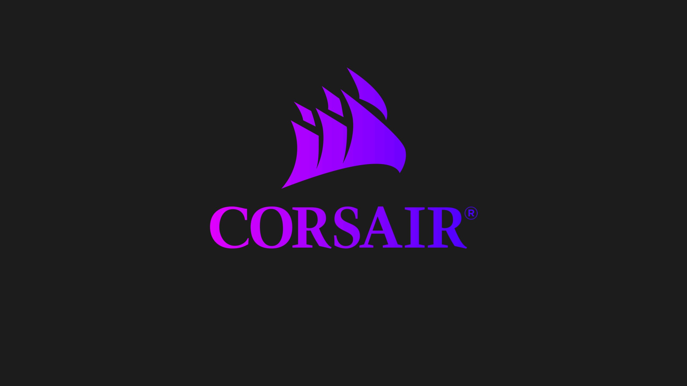

RTX 30 é o maior lançamento da Nvidia
Apesar de a pandemia ter mexido nos preços e estoques, o isolamento social também ajudou no lançamento da série RTX 30 e das plataformas da Nvidia. A empresa revelou que já possui mais de 260 milhões de jogadores em dispositivos GeForce e as GPUs Ampere são o maior lançamento da empresa até hoje.

De acordo com a Nvidia, a série de GPUs Ampere teve o crescimento mais rápido no mercado entre as arquiteturas de placas de vídeo da linha GeForce. Os produtos da série RTX 30 alcançaram o dobro de participação na Steam durante seu lançamento.

Em 2022: novos AMD Ryzen e Radeon 7000 devem ser lançados somente no próximo ano
No início deste mês a AMD já anunciou seus novos Ryzen 5000G e Radeon RX 6000M. Agora, reforçando rumores anteriores, uma nova fonte afirma que os modelos Ryzen 7000 e Radeon 7000 devem estrear somente em 2022, pelo menos segundo o usuário do Twitter Broly_X1, que revelou quando o novo chip e a GPU devem ser lançados.

Falando agora das GPUs Radeon 7000, que será baseada em RDNA 3, também deve adotar a litografia de 5 nm. É possível que ela também adote o mesmo design de chiplet visto nos Ryzen, levando ainda mais desempenho para a série Radeon RX 6000.
De qualquer forma, temos que lembrar que há uma crise internacional no fornecimento de semicondutores e ela pode afetar o lançamento da nova geração da AMD, então o ideal é entender que estas são apenas previsões vindas de um leaker e que o cenário pode mudar até o fim de 2022, podendo até mesmo o lançamento dos novos modelos ser adiado para 2023.




Corsair MP600 PRO Hydro X Edition é o 1º SSD da marca com resfriamento líquido

Neste final de semana Corsair anunciou sua nova linha de SSDs, a MP600 que é Gen4 PCIe x4 NVMe M.2. Os modelos anunciados fora o MP600 CORE, o MP600 PRO e o MP600 PRO Hydro X Edition. Este último foi desenvolvido para ser utilizado com sistemas de refrigeração liquida e é o primeiro da empresa a utilizar um Water Block Hydro X Series XM2 integrado.
A Corsair começa o ano de 2021 avançando com tudo com o MP600 PRO Hydro X Edition que funciona com refrigeração liquida. É interessante notar que o water block XM2 também pode ser utilizado em outros SSDs M.2 que possuam o formato 2280.
que é o M.2?
O Next Generation Form Factor (NGFF), mais conhecido como M.2, é uma especificação de placas de expansão para computador. O M.2 utiliza um layout de placa fisica PCI Express Mini Card, dando mais flexibilidade para fabricá-lo em diferentes tamanhos. Combinado com recursos de interface mais avançados, como o NVMe, o M.2 é uma alternativa muito mais eficiente do que o mSATA para os SSDs (Solid State Drives).
Desempenho

Em termos de desempenho, o SSD Corsair MP600 PRO apresenta uma velocidade de leitura sequencial de até 7GB/s (7000MB/s), enquanto sua escrita sequencial chega ao marco de 6,5GB/s (6550MB/s). Este SSD da Corsair chegará nas capacidades de 1TB e 2TB, mas a empresa ainda promete que lançará uma versão com 4TB. Entretanto, caso você deseje o SSD MP600 PRO Hydro X Edition, a companhia informa que só irá disponibilizar a capacidade máxima de 2TB.
Lançamento e disponibilidade
A Corsair já está comercializando seus novos SSDs. O Corsair MP600 PRO de 1TB está sendo vendido por US$225 enquanto o MP600 Pro Hydro X Edition de 2TB está saindo por US$460.